Frontier standards
Versioned thresholds, held-out testing, benchmark refresh, and high-risk-domain evaluation.
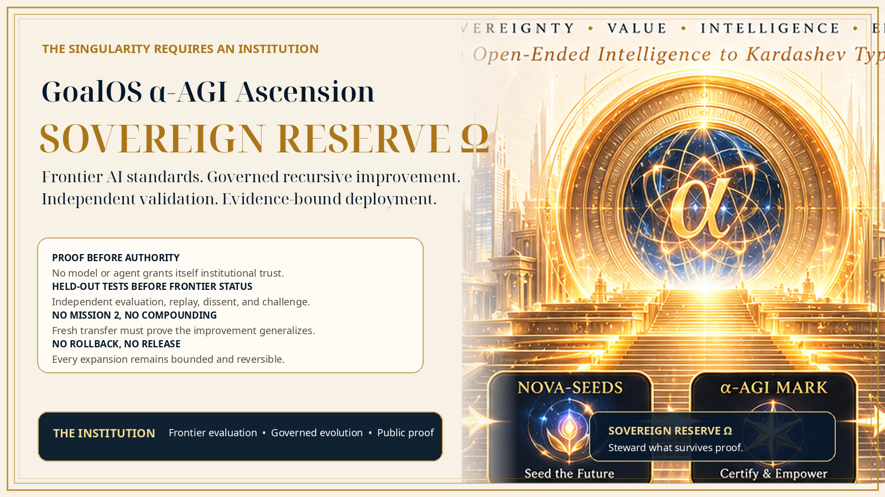
GoalOS α‑AGI Ascension — Sovereign Reserve Ω is built as that institution: a proof-gated, independent, public-private architecture for frontier AI standards, governed recursive improvement, institutional memory, and evidence-bound deployment.
The missing layer between frontier capability and civilization-scale deployment is an institution that can define thresholds, protect held-out tests, preserve dissent, govern recursive improvement, issue bounded decision states, and revoke authority when evidence fails.
GoalOS does not compete by generating more output. It governs which output may earn trust, deployment, memory, settlement, or future-mission influence.
Versioned thresholds, held-out testing, benchmark refresh, and high-risk-domain evaluation.
Evidence Dockets, reviewer independence, replay, dissent, challenge, and explicit blocked claims.
Harnesses, tools, agent topology, evaluators, memory, and routing may improve only through protected gates.
Only scoped, rights-resolved, fresh, rollbackable capability may enter Sovereign Reserve Ω.
A field moving at frontier speed needs standards that are dynamic, technically rigorous, independent enough to challenge labs, and capable of adapting as risks and capabilities change.
A public, non-certifying demonstration of how capability, risk, oversight, and rollback determine the evaluation burden.
Risk-weighted score: / 100
| Required gate | State |
|---|
Illustrative only. This tool does not certify, accredit, authorize deployment, or replace competent evaluation and lawful authority.
GoalOS generalizes harness evolution into institution-level improvement while preventing the candidate from rewriting the meaning of proof after seeing the result.
The curated public corpus contains the constitutional core, proof operations, governed memory, identity, routing, RSI, safety, assurance, continuity, and claim boundary.
documents

Defines purpose, authority hierarchy, admission gates, rights, rollback, and the bounded mandate of Sovereign Reserve Ω.
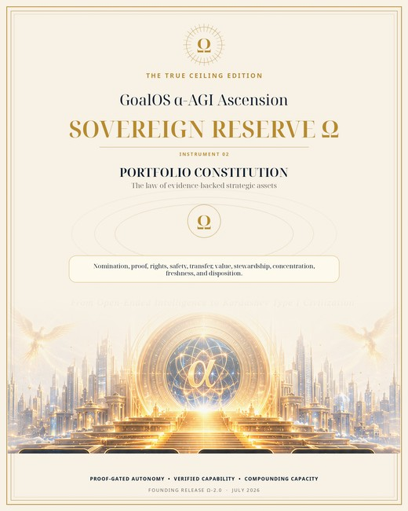
Governs asset classes, evidence levels, rights, safety, Mission 2 transfer, disposition, freshness, revocation, and concentration.

Maps the operating rooms from opportunity signals and Nova-Seeds through proof, Chronicle, value realization, and capacity allocation.

Defines decision rights, delegation, conflicts, reserved matters, escalation, and institutional records.
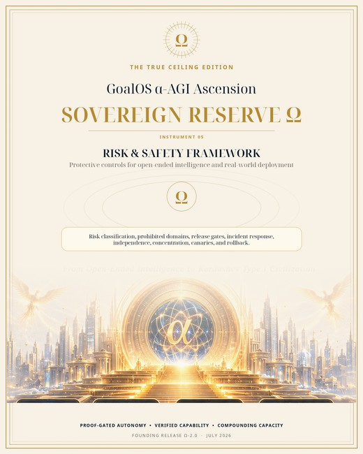
Defines risk classes, prohibitions, canaries, monitoring, stop conditions, incident handling, and rollback.
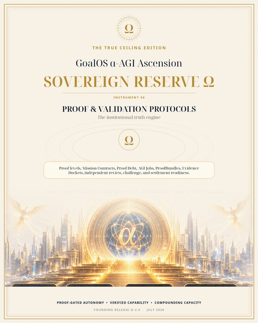
Defines proof levels, Evidence Dockets, reviewer independence, replay, dissent, and claim-state discipline.

Describes system boundaries, evidence state, Chronicle, graph roots, security, integrations, conformance, and release gates.

Governs provenance, purpose limitation, access, retention, transformation, evidence linkage, and controlled knowledge reuse.
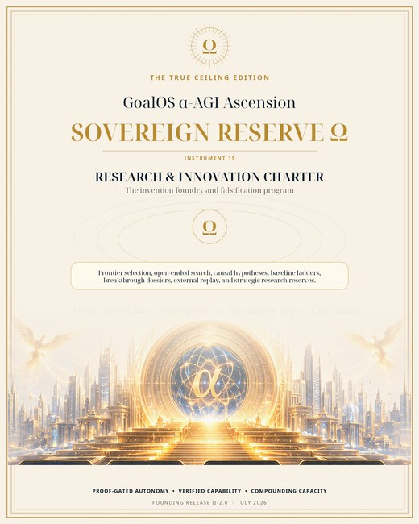
Defines baseline discipline, falsification, high-novelty skepticism, reproducibility, and research-to-capability transitions.

Defines accountable roles, protected dissent, competence, wellbeing, security culture, and human decision ownership.
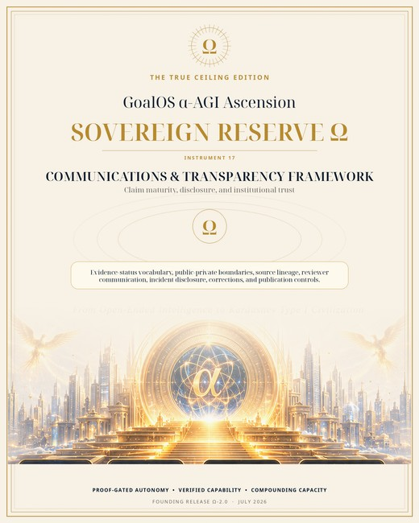
Defines claim-status vocabulary, publication review, corrections, source lineage, confidentiality, and incident communications.
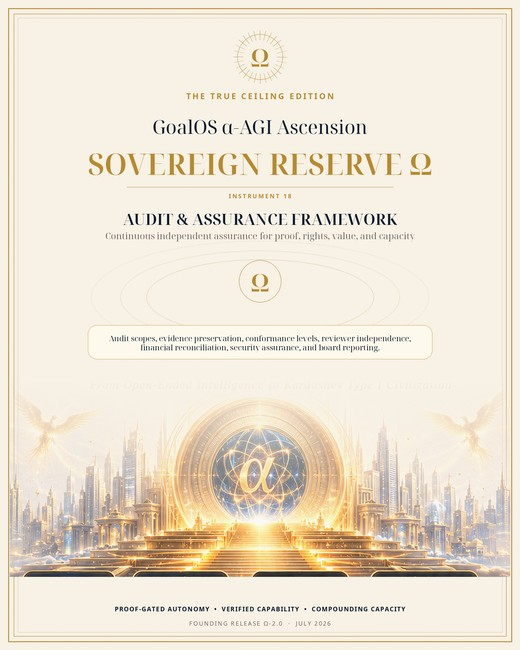
Defines internal audit, external assurance, technical conformance, rights review, findings, severity, remediation, and follow-up.

Defines continuity, recovery priorities, minimal state reconstruction, communication, restoration tests, and reauthorization.

Defines proof-gated changes to charters, policies, models, agents, routing, schemas, and institutional controls.

Formalizes Objective → Proof Mission → AGI Jobs → Evidence → Chronicle → Validated Skill → Graph Root → Future Mission Improvement.
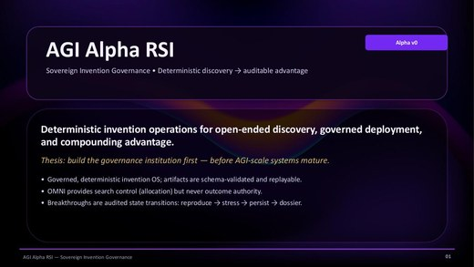
Describes deterministic open-ended discovery, baseline-comparative evaluation, replay, stress, persistence, dossiers, and governed promotion.

Describes role-aware identity, scoped environments, proof-bearing work, validation, settlement, and bounded governance.
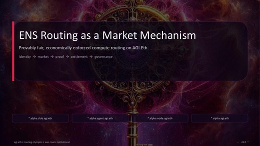
Describes commit-reveal routing, deterministic selection, receipts, challenges, and auditable allocation. Technical research only.

Separates committed graph state from Chronicle authority and supports selective disclosure, continuity, revocation, and verification.
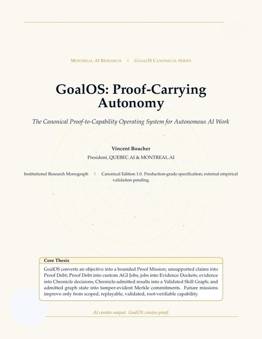
The canonical proof-to-capability operating system, including object model, evidence status, threat model, deployment path, and Proof Run 001.
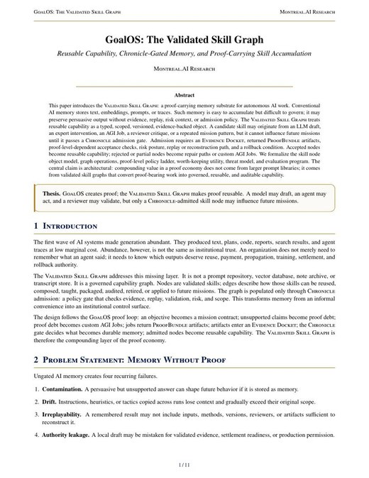
Defines proof-carrying capability memory with scope, provenance, validators, freshness, rollback, revocation, and bounded reuse.
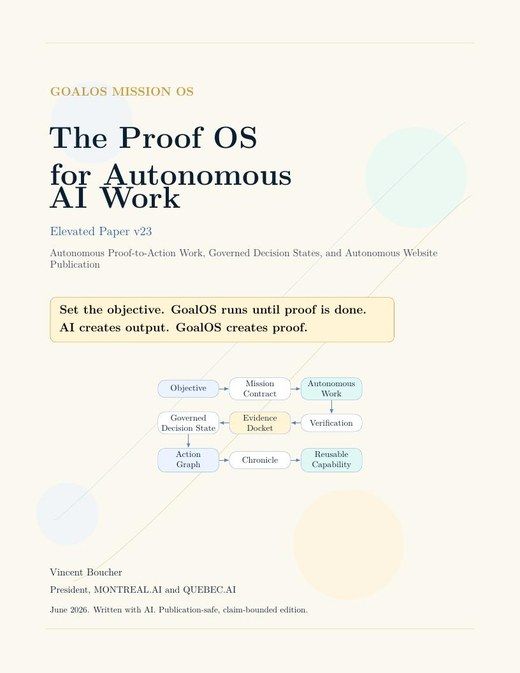
Explains the Governed Decision State, proof-to-action work, publication law, commercial wedge, conformance, and safety boundary.
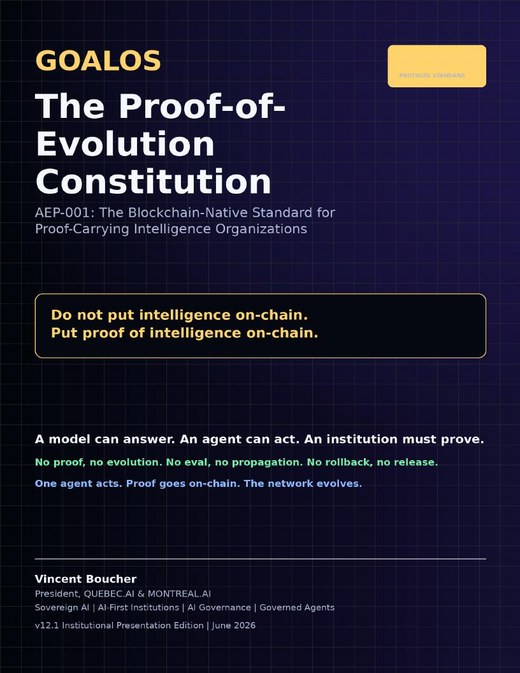
Defines proof-backed upgrade rights, public-private boundaries, evaluation, canaries, challenge windows, rollback, and evolution ledgers.
GoalOS is positioned as the institution by architecture and mission. Stronger claims remain gated by the same proof standard it applies to frontier systems.
Doctrine, Mission OS, proof loops, Chronicle, VSG, Merkle, AEP-001, governance, safety.
Browser-local institution, artifact export, demonstrators, reference contracts, deployment packs.
Identity, routing, validation, graph-root, and proof-state designs.
Independent external mission replay, official designation, deployment-specific certification.
General institution-level recursive compounding and civilization-scale capacity effects.
The founding move is not a token purchase or a slogan. It is a real mission, independent reviewers, protected held-out tests, and a public-safe Evidence Docket.
One consequential but reversible objective, one accountable sponsor, one deadline, one rollback.
Read the brief →Contribute held-out testing, red-team review, replay, conflict disclosure, and dissent.
Review the protocol →Help define thresholds, benchmark lifecycle, reviewer independence, and post-release response.
Open the blueprint →Adopt the Charter, Portfolio Constitution, and Institutional Operating System for a bounded domain.
Open the Charter →All approved public PDFs, governance notices, publication controls, and checksums.
Institutional declaration, standards blueprint, RSI standard, constitutional trilogy, and selected proof materials.
The complete static site, public library, current workflow, notices, manifest, and validation record.
Before downloading, confirm the public boundary.